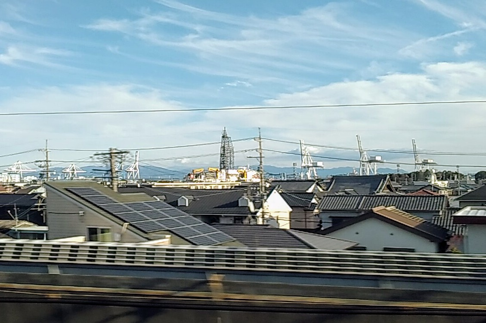
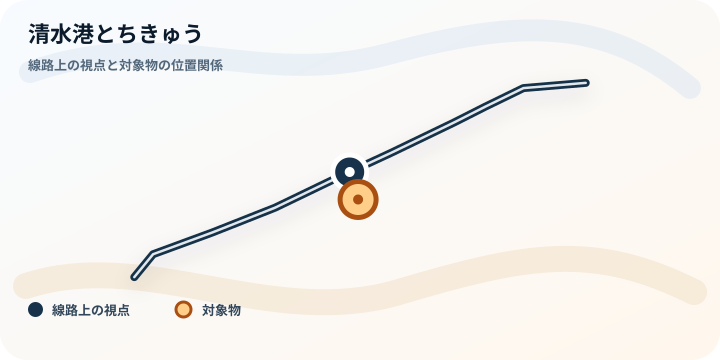
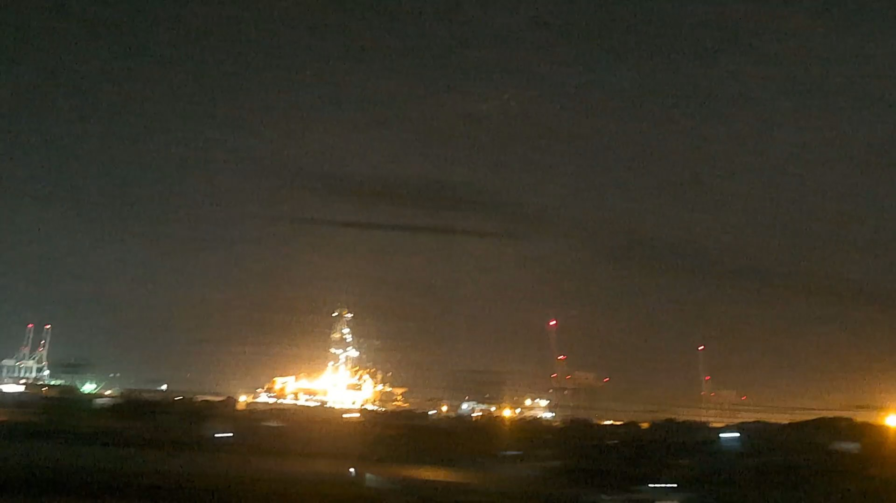

TOKAIDO SHINKANSEN WINDOW VIEW
清水港とちきゅうはいつ見える？座席側は？
港のクレーンと、ちきゅう。

- 見える区間
- 新富士 → 静岡
- 座席側
- A席・海側
- タイミング
- 東京発のぞみ基準で約50分後
- 写真
- 3 枚
位置の目安
地図で見る
タイル地図ではなく、線路と対象物の位置関係だけを描いた軽量な静的地図です。 乗車中はライブ地図で見る
清水港とちきゅうの見つけ方
新富士から静岡へ向かう途中、A席側に清水港のクレーン群が見えてきます。停泊していれば、地球深部探査船「ちきゅう」も窓に入ります。富士山のあとに、今度は港の巨大構造物が現れる。山と海と工業の距離が近い、静岡らしい車窓です。
東京から新大阪方面へ向かう場合は、新富士 → 静岡が近づいたらA席・海側の窓を少し早めに見てください。新大阪から東京方面へ向かう場合は、通過順が逆になります。
東海道新幹線の車窓としてのポイント
清水港とちきゅうは、富士山だけではない東海道新幹線の車窓を楽しむための見どころです。列車の速度が速いため、見える時間は短く、天気や座席位置によって見え方が変わります。
写真で見る清水港とちきゅう
